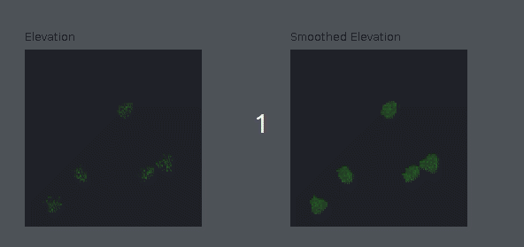
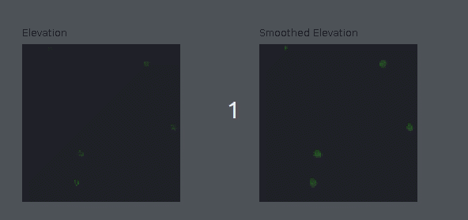
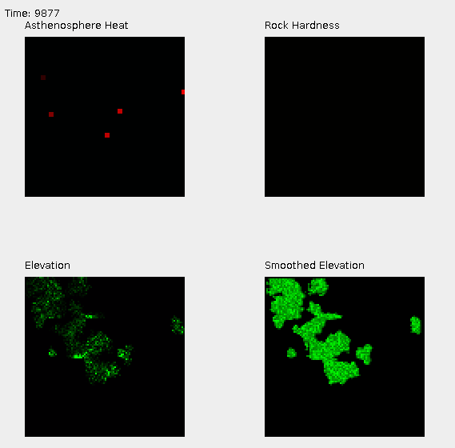

Tectonic Motion Simulation Project
The goal of this project is to create a library capable of generation semi-believable landmasses via emulating tectonic motion.
Approximate Start Date: May 2018
Source code: Please contact me for the source code.
Features:
- Simulate Asthenosphere pushing molten rock into the Lithosphere via hotspots
- Elevated rock is simulated as particles being pushed around on the surface of the "planet"
- Convection cells converge the particles towards believable shapes
Sample Images

Video of terrain generation in real time

Another real time video

Sample of the main UI
The top left shows the hotspots in the Asthenosphere. They flare up and then subside.
The bottom left is rock particles on the oceanic plane.
The bottom right is the particle view with a smoothing filter applied to it. I found that this approach generated the most believable shapes.